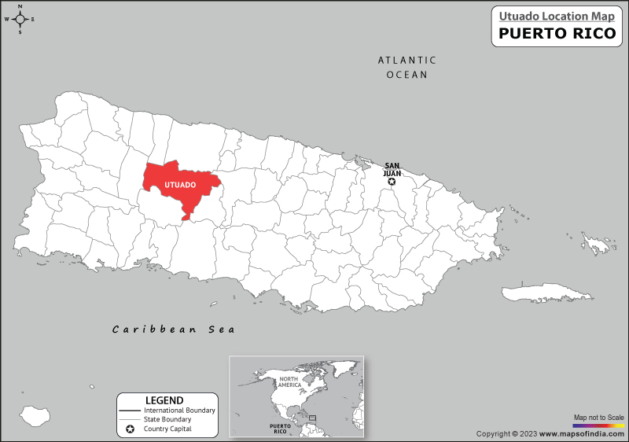
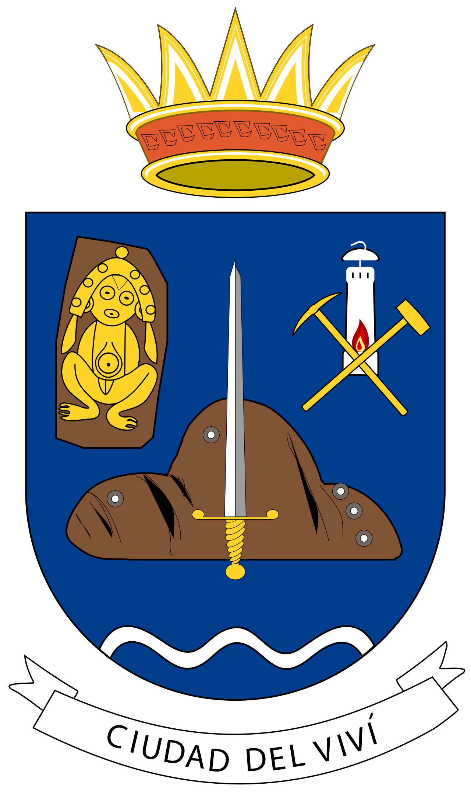
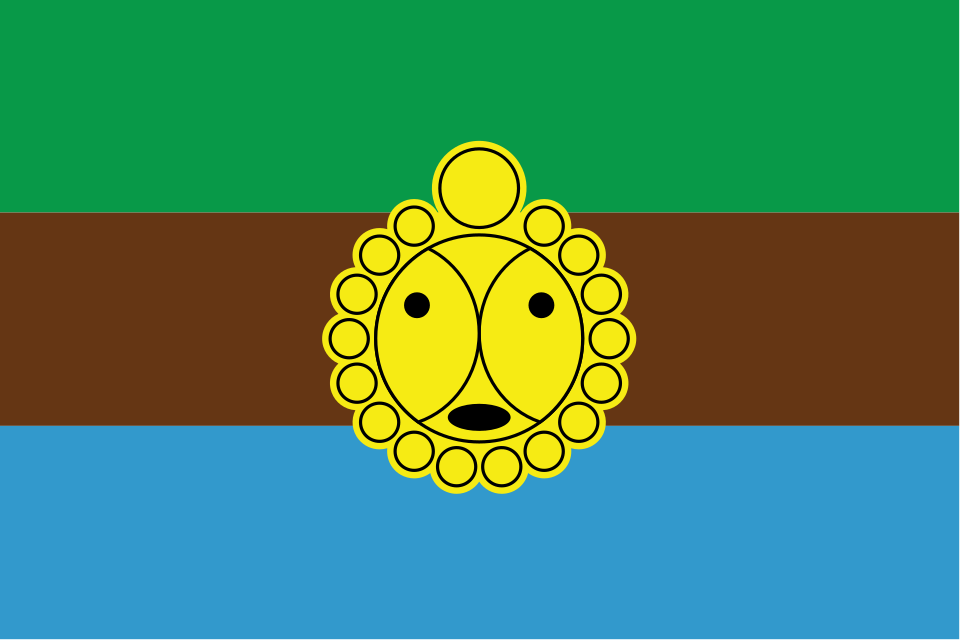

Nuestra Ciudad
Utuado es un municipio ubicado en la región central montañosa de Puerto Rico, conocido como “La Ciudad del Viví” por el río que atraviesa su territorio.
Este pueblo se distingue por su riqueza natural, sus montañas, cuevas y ríos, siendo un destino ideal para el ecoturismo y la exploración al aire libre.
Entre sus principales atractivos se encuentran la Cueva Ventana, el Lago Dos Bocas y el Parque Ceremonial Indígena de Caguana, uno de los sitios arqueológicos más importantes del Caribe.

Mapa que muestra la ubicación de Utuado en Puerto Rico.

Escudo oficial de Utuado, conocido como la Ciudad del Viví.

Bandera representativa del municipio de Utuado.
Personas ilustres
- Fernando Luis García - héroe militar condecorado con la Medalla de Honor
- Antonio Reyes - figura destacada en la cultura local
- Líderes comunitarios y educadores que han aportado al desarrollo del pueblo